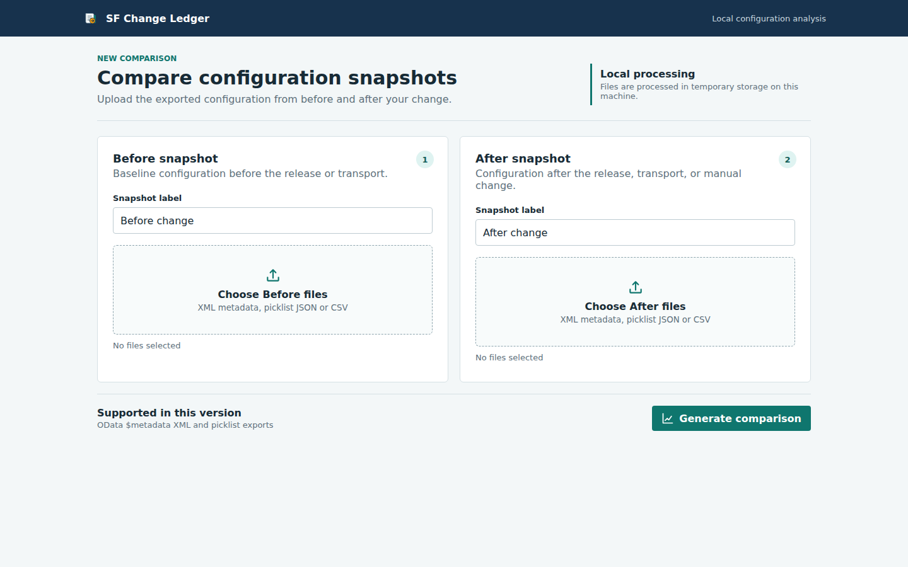

SF Change Ledger
SF Change LedgerDetect added, removed, and modified fields or picklist values by stable object ID.
SuccessFactors change control
Know what changed. Know what to test.
Compare before and after SuccessFactors configuration exports, remove XML noise, identify meaningful risk, and produce a practical test pack for implementation and support teams.

What it delivers
Configuration evidence without raw diff noise
The tool converts OData metadata XML and picklist exports into stable configuration objects before comparison.
Surface mandatory-field changes, type and length changes, removals, and status changes.
Translate configuration differences into concrete transaction and integration tests.
Export Summary, Changes, Property Diffs, and Test Checklist worksheets.
Run against exported files without sending tenant configuration to an external service.
Download Excel, HTML, Markdown, or JSON for technical and governance audiences.
Workflow
From two exports to an actionable review pack
Select baseline metadata XML and optional picklist JSON or CSV.
Select the configuration captured after the transport or change.
Filter findings by severity, object, property, and explanation.
Download the Excel workbook or a portable HTML, Markdown, or JSON report.
pip install -r requirements-web.txt
PYTHONPATH=src python3 web/app.py
# Open http://127.0.0.1:5075